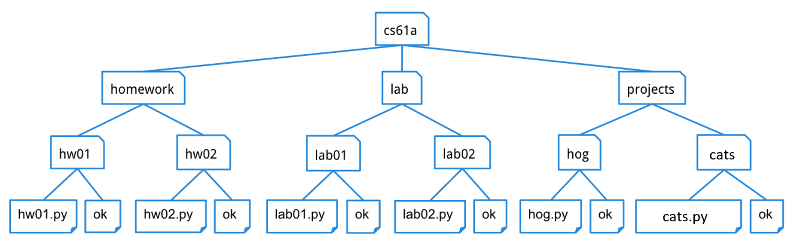

作业 3：可变性、树、迭代器、生成器
说明
下载 hw03.zip。在压缩包中，你会找到一个名为 hw03.py 的文件，以及一份 ok 自动评分器的副本。
关于 Ok 的使用：如果你对如何使用 Ok 有任何疑问，请参阅 本指南
阅读材料：你可能会觉得以下参考资料有用：
评分：作业按照正确性评分。每做错一道题，总分减一分。本次作业满分为 2 分。
必做题
如果你需要复习可变性（mutability），可以查阅下拉菜单。直接跳到题目、遇到困难再回来查看也可以。
列表最常见的两种修改操作是元素赋值和 append 方法。
>>> s = [1, 3, 4]
>>> t = s # A second name for the same list
>>> t[0] = 2 # this changes the first element of the list to 2, affecting both s and t
>>> s
[2, 3, 4]
>>> s.append(5) # this adds 5 to the end of the list, affecting both s and t
>>> t
[2, 3, 4, 5]还有许多其他的列表修改方法：
append(elem)：把 elem 添加到列表末尾。返回None。extend(s)：把可迭代对象 s 的所有元素添加到列表末尾。返回None。insert(i, elem)：在索引i处插入elem。如果 i 大于或等于列表的长度，则把elem插入到末尾。这不会替换任何已有的元素，只是新增元素 elem。返回None。remove(elem)：删除列表中第一次出现的elem。返回None。如果 elem 不在列表中则报错。pop(i)：删除并返回索引 i 处的元素。pop()：删除并返回最后一个元素。
字典也有元素赋值（经常使用）和 pop（很少使用）。
>>> d = {2: 3, 4: 16}
>>> d[2] = 4
>>> d[3] = 9
>>> d
{2: 4, 4: 16, 3: 9}
>>> d.pop(4)
16
>>> d
{2: 4, 3: 9}如果你需要复习生成器，读读这个可能会有帮助：
yield 语句，而不是 return 语句。调用生成器函数会返回一个生成器对象，并且不会执行函数体。
例如，来看下面这个生成器函数：
def countdown(n):
print("Beginning countdown!")
while n >= 0:
yield n
n -= 1
print("Blastoff!")调用 countdown(k) 会返回一个从 k 倒数到 0 的生成器对象。由于生成器是迭代器，我们可以对得到的对象调用 iter，它会直接返回同一个对象。注意此时函数体还没有执行：不会打印任何东西，也不会输出任何数字。
>>> c = countdown(5)
>>> c
<generator object countdown ...>
>>> c is iter(c)
True那么倒数是怎样进行的呢？同样，由于生成器是迭代器，我们对它调用 next 来获取下一个元素！第一次调用 next 时，执行从函数体的第一行开始，一直进行到遇到 yield 语句为止，并返回 yield 语句中表达式的求值结果。下面的交互会话紧接在上面的会话之后。
>>> next(c)
Beginning countdown!
5与本课程之前见到的函数不同，生成器函数可以记住自己的状态。之后每次调用 next 时，执行都会从上次执行过的 yield 语句的下一行继续。和第一次调用 next 一样，执行会一直进行到下一个 yield 语句为止。注意，正因如此，Beginning countdown! 不会被再次打印。
>>> next(c)
4
>>> next(c)
3接下来的 3 次 next 调用会继续依次产出递减的整数，直到 0。在下一次调用时，会抛出 StopIteration 错误，因为没有更多的值可以产出了（也就是说，在遇到 yield 语句之前函数体就已经执行完毕）。
>>> next(c)
2
>>> next(c)
1
>>> next(c)
0
>>> next(c)
Blastoff!
StopIteration分别调用 countdown 会创建各自独立的、带有自己状态的生成器对象。通常生成器不应该重新开始。如果你想重置序列，可以再次调用生成器函数来创建另一个生成器对象。
>>> c1, c2 = countdown(5), countdown(5)
>>> c1 is c2
False
>>> next(c1)
5
>>> next(c2)
5下面是上述内容的总结：
- 生成器函数包含
yield语句，并返回一个生成器对象。 - 对生成器对象调用
iter函数会返回同一个对象，并且不会改变它当前的状态。 - 在对生成的生成器对象调用
next之前，生成器函数的函数体不会被执行。对生成器对象调用next函数会计算并返回序列中的下一个对象。如果序列已经耗尽，则抛出StopIteration。 生成器会为下一次
next调用「记住」自己的状态。因此，第一次
next调用是这样进行的：- 进入函数并运行到带有
yield的那一行。 - 返回
yield语句中的值，但要记住函数的状态，以便之后调用next时使用。
- 进入函数并运行到带有
而之后的
next调用则是这样进行的：- 重新进入函数，从上次执行过的
yield语句的下一行开始，一直运行到下一个yield语句。 - 返回
yield语句中的值，但要记住函数的状态，以便之后调用next时使用。
- 重新进入函数，从上次执行过的
- 调用生成器函数会返回一个全新的生成器对象（就像对可迭代对象调用
iter一样）。 - 生成器不应该重新开始，除非它就是这样定义的。要从生成器的第一个元素重新开始，只需再次调用生成器函数来创建一个新的生成器。
生成器还有一个很有用的工具是 yield from 语句。yield from 会产出某个迭代器或可迭代对象中的所有值。
>>> def gen_list(lst):
... yield from lst
...
>>> g = gen_list([1, 2, 3, 4])
>>> next(g)
1
>>> next(g)
2
>>> next(g)
3
>>> next(g)
4
>>> next(g)
StopIteration这次再来复习一下迭代器：
list 函数转换成列表。到目前为止，我们在 Python 中见过的可迭代对象包括字符串、列表、元组和 range。
>>> for x in "cat":
... print(x)
c
a
t
>>> [x*2 for x in (1, 2, 3)]
[2, 4, 6]
>>> list(range(4))
[0, 1, 2, 3]注意这里存在的抽象：给定某个可迭代对象，我们就有一组定义好的、可以对它执行的操作。在这次讨论课中，我们会掀开抽象屏障的一角，看看可迭代对象在「底层」是如何实现的。
在 Python 中，可迭代对象正式实现为可以传给内置函数 iter 以产生迭代器的对象。迭代器是另一种对象，可以用 next 函数逐个产生元素。
iter(iterable)：返回一个遍历给定可迭代对象元素的迭代器。next(iterator)：返回迭代器中的下一个元素；如果没有元素了，就抛出StopIteration异常。
例如，数字列表就是一种可迭代对象，因为 iter 会给我们一个遍历该序列的迭代器，我们可以用 next 函数来推进它：
>>> lst = [1, 2, 3]
>>> lst_iter = iter(lst)
>>> lst_iter
<list_iterator object ...>
>>> next(lst)
1
>>> next(lst)
2
>>> next(lst)
3
>>> next(lst)
StopIteration迭代器非常简单。它只有一种获取下一个元素的机制：next。你无法对迭代器进行索引，也无法后退。一旦迭代器产生了一个元素，除非我们把它存下来，否则就无法再次获得该元素。
注意，迭代器本身就是可迭代对象：对迭代器调用 iter 只会返回同一个迭代器对象。
例如，我们可以看看对列表使用 iter 和 next 时会发生什么：
>>> lst = [1, 2, 3]
>>> next(lst) # Calling next on an iterable
TypeError: 'list' object is not an iterator
>>> list_iter = iter(lst) # Creates an iterator for the list
>>> next(list_iter) # Calling next on an iterator
1
>>> next(iter(list_iter)) # Calling iter on an iterator returns itself
2
>>> for e in list_iter: # Exhausts remainder of list_iter
... print(e)
3
>>> next(list_iter) # No elements left!
StopIteration
>>> lst # Original iterable is unaffected
[1, 2, 3]我们之前在课上学的 map 和 filter 函数返回的是迭代器对象。
树的复习：
cs61a 文件夹里，有分别存放项目、实验和作业的文件夹。下一层是区分不同作业的文件夹，如 hw01、lab01、hog 等，再往里就是文件本身，包括起始文件和 ok。下面是你 cs61a 目录可能的样子的一张不完整示意图。

可以看到，与自然界中的树不同，树这种抽象数据类型的画法是根在顶部、叶在底部。
对于树 t：
- 它的根标签可以是任意值，
label(t)会返回它。 - 它的分支也是树，
branches(t)会返回一个由分支组成的列表。 - 用
tree(label(t), branches(t))可以构造出一棵完全相同的树。 - 你可以调用以树为参数的函数，例如
is_leaf(t)。 - 这就是操作树的方式。不要使用
t == x、t[0]、x in t或list(t)等写法。 - 没有办法在不破坏抽象屏障的前提下修改一棵树。
下面是一棵示例树 t1，它的分支 branches(t1)[1] 就是 t2。
t2 = tree(5, [tree(6), tree(7)])
t1 = tree(3, [tree(4), t2]) 可变性
可变性
Q1：库存取货
实现函数 inventory_pickup，它有一个列表 inventory、一个列表 items 和一个参数 capacity。该函数应当就地修改列表 inventory 并返回同一个被修改后的列表。inventory 的长度/大小为 capacity，在处理完 items 中的所有物品之后，如果 inventory 的元素超过 capacity 个，就从 inventory 的前端（最旧的先）移除元素，直到 inventory 恰好有 capacity 个元素，从而为即将取货的物品腾出空间。inventory 必须被修改，你不能每次都替换或复制 inventory；如果使用另一个变量代替 inventory，它也必须随之改变。
时序：先处理完所有物品（去重 + 追加），只有在所有物品都添加完毕之后，才检查并裁剪以满足 capacity。裁剪可能需要移除不止一个元素。
对于 items 中的每个 item：
- 移除该 item 当前在
inventory中已有的所有副本（0 个、1 个、2 个或更多） - 把该 item 的一个副本追加到
inventory的末尾
重要：修改原 inventory 并返回修改后的 inventory。不要返回 inventory 的副本。
items可能与inventory是同一个列表对象。想一想：如果你在遍历items的同时inventory（同一个列表）在底下被修改，会发生什么；以及在遍历列表时移除多个匹配的元素又会发生什么。
def inventory_pickup(inventory: list, items: list, capacity: int) -> list:
"""Simulate picking up every item in items and add them, one at a time, to the inventory IN PLACE.
The function should return the mutated inventory.
>>> inv = [1, 2, 1, 3, 1]
>>> inv_test = inventory_pickup(inv, [1, 4], 10)
>>> inv_test
[2, 3, 1, 4]
>>> inv2 = [11, 12, 13]
>>> inv2_test = inventory_pickup(inv2, inv2, 7)
>>> inv2_test
[11, 12, 13]
>>> inv3 = [1, 2, 1, 3, 1]
>>> check_mutation = inv3
>>> inv3_test = inventory_pickup(inv3, inv3, 3)
>>> inv3_test
[2, 3, 1]
>>> check_mutation is inv3_test
True
>>> inv4 = [1, 2, 3, 4]
>>> inv4_test = inventory_pickup(inv4, [5, 6, 7, 8, 9, 10], 10)
>>> inv4_test
[1, 2, 3, 4, 5, 6, 7, 8, 9, 10]
>>> inv5 = [1, 2, 3, 4]
>>> inv5_test = inventory_pickup(inv5, [5, 6, 7, 8], 6)
>>> inv5_test
[3, 4, 5, 6, 7, 8]
>>> inv6 = ['hello', 'world']
>>> inv6_test = inventory_pickup(inv6, ['hi', 'hello'], 4)
>>> inv6_test
['world', 'hi', 'hello']
"""
"*** YOUR CODE HERE ***"
用 ok 测试你的代码：
python3 ok -q inventory_pickup树
Q2：寻找浆果！
校园里的松鼠需要你的帮助！校园里有很多树，松鼠们想知道哪些树上有浆果。定义函数 berry_finder，它接收一棵树，如果这棵树中存在值为 'berry' 的节点则返回 True，否则返回 False。
提示：要遍历某棵树的每个分支，你可以考虑使用
for循环来依次取得每个分支。
def berry_finder(t):
"""Returns True if t contains a node with the value 'berry' and
False otherwise.
>>> scrat = tree('berry')
>>> berry_finder(scrat)
True
>>> sproul = tree('roots', [tree('branch1', [tree('leaf'), tree('berry')]), tree('branch2')])
>>> berry_finder(sproul)
True
>>> numbers = tree(1, [tree(2), tree(3, [tree(4), tree(5)]), tree(6, [tree(7)])])
>>> berry_finder(numbers)
False
>>> t = tree(1, [tree('berry',[tree('not berry')])])
>>> berry_finder(t)
True
"""
"*** YOUR CODE HERE ***"
用 ok 测试你的代码：
python3 ok -q berry_finderQ3：大小
定义函数 size_of_tree，它接收一棵树 t，返回其中包含的条目数量。
def size_of_tree(t):
"""Return the number of entries in the tree.
>>> numbers = tree(1, [tree(2), tree(3, [tree(4), tree(5)]), tree(6, [tree(7)])])
>>> print_tree(numbers)
1
2
3
4
5
6
7
>>> size_of_tree(numbers)
7
"""
"*** YOUR CODE HERE ***"
用 ok 测试你的代码：
python3 ok -q size_of_treeQ4：构造路径
实现 make_path，它接收一棵标签唯一的树 t 和一个以 t 的根标签开头的列表 p。它返回节点数最少的树 u，使得 has_path(u, p) 返回 True，并且对所有满足 has_path(t, q) 返回 True 的列表 q 都有 has_path(u, q) 返回 True。（也就是说，u 拥有 t 的所有路径，另外还拥有一条标签为 p 的路径。）
u 中每个不对应于 t 中节点的节点，都应放在其父节点分支列表的最后。假设 t 的标签唯一。如果 has_path(t, p) 成立，那么 make_path(t, p) 应返回一棵与 t 完全相同（结构和标签都相同）的树。
def make_path(t, p):
"""Return a tree with all of the nodes of t and a path with labels p.
>>> t2 = tree(5, [tree(6), tree(7)])
>>> t1 = tree(3, [tree(4), t2])
>>> make_path(t1, [3, 5, 7]) == t1
True
>>> print_tree(make_path(t1, [3, 8, 9, 1]))
3
4
5
6
7
8
9
1
>>> print_tree(make_path(t1, [3, 4, 8, 9]))
3
4
8
9
5
6
7
>>> print_tree(make_path(tree(2, [tree(1), t1]), [2, 3, 5, 6, 8]))
2
1
3
4
5
6
8
7
"""
assert p[0] == label(t), 'It is not possible to make this path'
if len(p) == 1:
return ____
new_branches = []
found_p1 = False
for b in branches(t):
if ____:
"*** YOUR CODE HERE ***"
else:
new_branches.append(b)
if not found_p1:
new_branches.append(make_path(____, ____))
return tree(____, new_branches)
由于有 assert，基本情况的条件 len(p) == 1 就足以确认 p == [label(t)]。在这种情况下，不需要额外的节点来确保 t 中存在一条标签为 p 的路径。
为了尽量减少加入树中的节点数，我们首先寻找一个可以延伸的分支。变量 found_p1 将决定是否要向 new_branches 中追加一个不对应于 branches(t) 中任何分支的新分支。当找到 label(b) == p[1] 的分支时把它更新为 True，就能保证这条路径只被加到该分支上。
你会进行哪些递归调用？
make_path(b, p[1:]) 只能对标签为 p[1] 的 b 调用。你要么找到这样一个分支，要么用 tree(p[1]) 造一个。
它们返回什么类型的值？
递归调用返回的树包含一条标签为 p[1:] 的路径。
这些可能的返回值分别意味着什么？
这个返回值是 make_path(t, p) 返回的树的一个分支。
你如何利用这些返回值来完成你的实现？
把返回值放进 new_branches 列表中。
既然你已经断言 p[0] == label(t)，那么如果 p 的长度为 1，t 就包含一条标签为 p 的路径，因此你直接返回 t 即可。
如果 p[1] 是某个分支的标签，那么就应当沿着该分支构造路径。否则，必须新建一个分支。
搜索每个分支，找到一个标签为 p[1] 的分支，然后把在该分支上递归调用的结果追加到 new_branches。
如果没有分支的标签是 p[1]，就用 tree(p[1]) 新建一个分支，用 make_path 构造该分支的其余部分，并把结果追加到 new_branches。
用 ok 测试你的代码：
python3 ok -q make_path迭代器 / 生成器
Q5：合并
实现 merge(incr_a, incr_b)，它接收两个元素有序的可迭代对象 incr_a 和 incr_b。merge 按排序顺序产出 incr_a 和 incr_b 中的元素，并消除重复。你可以假设 incr_a 和 incr_b 本身不含重复元素，且两者的元素都不为 None。你不能假设这些可迭代对象是有限的；任何一个都可能产生无限的结果流。
你可能会发现使用内置 next 函数的双参数版本很有帮助：next(incr, v) 与 next(incr) 相同，只是当 incr 的元素耗尽时它返回 v，而不是抛出 StopIteration。
行为示例参见 doctest。
def merge(incr_a, incr_b):
"""Yield the elements of strictly increasing iterables incr_a and incr_b, removing
repeats. Assume that incr_a and incr_b have no repeats. incr_a or incr_b may or may not
be infinite sequences.
>>> m = merge([0, 2, 4, 6, 8, 10, 12, 14], [0, 3, 6, 9, 12, 15])
>>> type(m)
<class 'generator'>
>>> list(m)
[0, 2, 3, 4, 6, 8, 9, 10, 12, 14, 15]
>>> def big(n):
... k = 0
... while True: yield k; k += n
>>> m = merge(big(2), big(3))
>>> [next(m) for _ in range(11)]
[0, 2, 3, 4, 6, 8, 9, 10, 12, 14, 15]
"""
iter_a, iter_b = iter(incr_a), iter(incr_b)
next_a, next_b = next(iter_a, None), next(iter_b, None)
"*** YOUR CODE HERE ***"
用 ok 测试你的代码：
python3 ok -q mergeQ6：产出路径
编写一个生成器函数 yield_paths，它接收一棵树 t 和一个目标 target。它产出从 t 的根到任何标签为 target 的节点的每条路径。
每条路径应以从根到匹配节点的标签列表的形式返回。路径可以按任意顺序产出。
提示：如果不知如何下手，想一想如果这不是一个生成器函数你会怎么解这道题。递归的步骤会是什么样子？
提示：记住，你可以对生成器对象进行迭代，因为它们也是一种迭代器！
def yield_paths(t, target):
"""
Yields all possible paths from the root of t to a node with the label
target as a list.
>>> t1 = tree(1, [tree(2, [tree(3), tree(4, [tree(6)]), tree(5)]), tree(5)])
>>> print_tree(t1)
1
2
3
4
6
5
5
>>> next(yield_paths(t1, 6))
[1, 2, 4, 6]
>>> path_to_5 = yield_paths(t1, 5)
>>> sorted(list(path_to_5))
[[1, 2, 5], [1, 5]]
>>> t2 = tree(0, [tree(2, [t1])])
>>> print_tree(t2)
0
2
1
2
3
4
6
5
5
>>> path_to_2 = yield_paths(t2, 2)
>>> sorted(list(path_to_2))
[[0, 2], [0, 2, 1, 2]]
"""
if label(t) == target:
yield ____
for b in branches(t):
for ____ in ____:
yield ____
用 ok 测试你的代码：
python3 ok -q yield_paths本地查看得分
你可以在本地查看本次作业每道题的得分，运行：
python3 ok --score历年考题
作业中还会包含一些往年的考题供你参考。这些题目没有提交要求；如果你想挑战一下，尽管尝试！
- 2019 年夏季 MT Q3：Boxing Day
- 2021 年秋季 MT2 Q3bc：Shang-Chi
- 2023 年秋季期末 Q2：Path Math